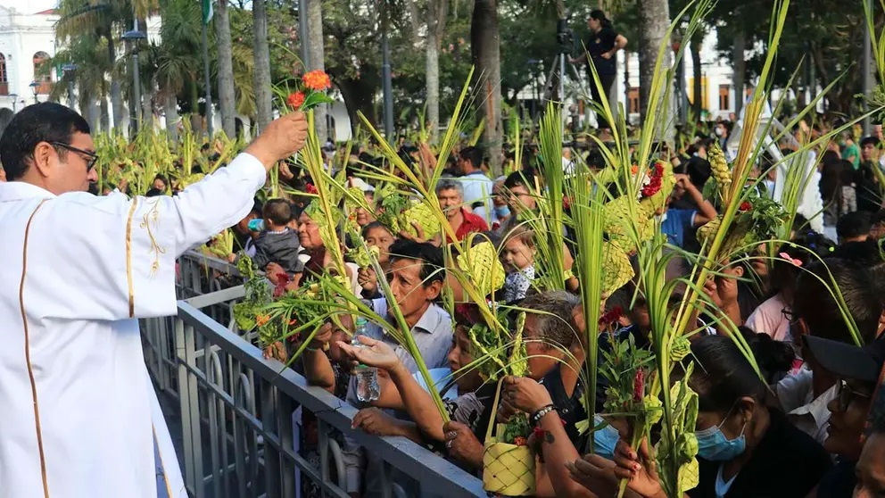
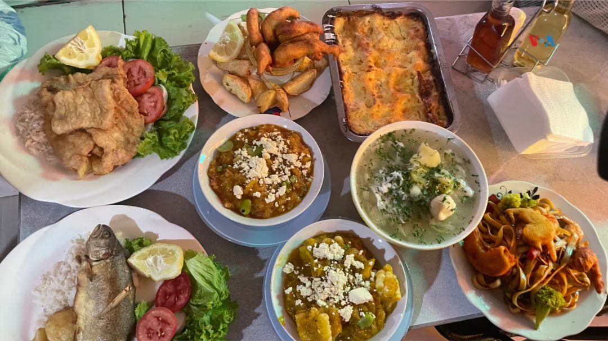
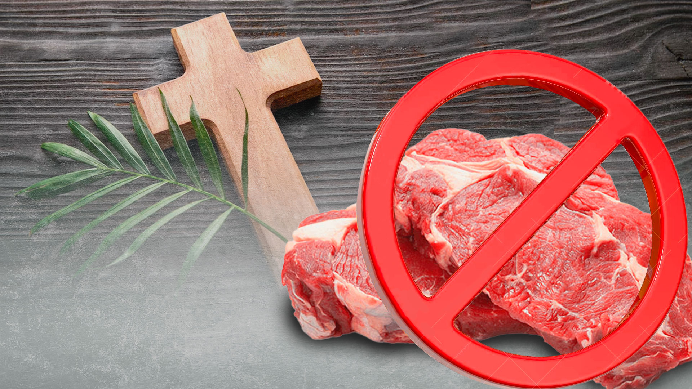
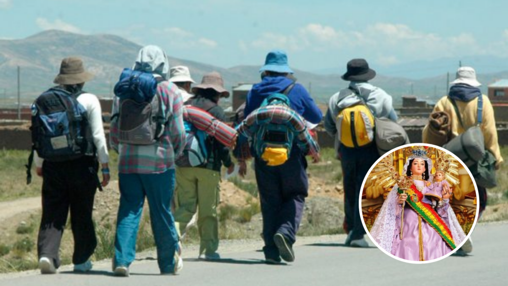
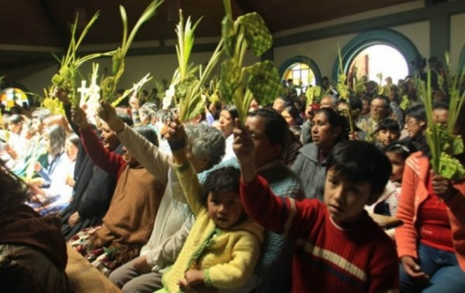
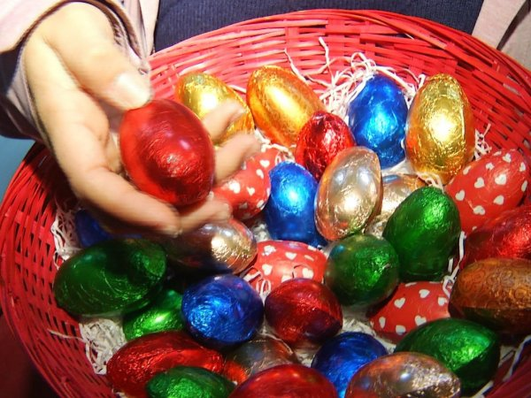

Semana Santa en Bolivia

Domingo de Ramos
La población hace bendecir sus ramos, estos simbolizan protección.

Representaciónes Teatrales
Se realizan dramatizaciones de la pasión y muerte de Cristo.

12 Platos Especiales
Muchas familias preparan esta cantidad para simbolizar a los apostoles.

No Se Consume Carne Roja
Como muestra de respeto a Jesús, se evita su consumo estos días.

Peregrinaje En Grupos
Muchos hacen esta penitencia para fortalecer la espiritualidad viajando largos caminos.

Iglesias Llenas De Familias
Así se transmite y prevalece la importancia de la Semana Santa.

Huevos De Pascua
Aumento su popularidad con los huevos de chocolate para niños envueltos en papel colorido.
La Semana Santa en Bolivia es una de las festividades religiosas más significativas del país, marcada por una profunda devoción y tradiciones que reflejan la riqueza cultural y espiritual de su pueblo.
¿Por qué celebramos la Semana Santa?
La Semana Santa conmemora la pasión, muerte y resurrección de Jesucristo. En Bolivia, esta celebración tiene raíces profundas que combinan elementos religiosos con costumbres autóctonas, ofreciendo una experiencia única que atrae tanto a locales como a turistas.
Tradiciones y costumbres en Bolivia
Durante la Semana Santa, los bolivianos participan en diversas prácticas que reflejan su fe y cultura:
Ayuno y abstinencia: El Viernes Santo es un día de ayuno y abstinencia, donde muchos fieles limitan su consumo de alimentos como acto de penitencia y reflexión.
Procesiones y peregrinaciones: En ciudades como La Paz, es común realizar peregrinaciones hacia iglesias emblemáticas, como la del Señor de la Exaltación en Obrajes, buscando fortalecer la espiritualidad y la comunidad.
Preparación de platos tradicionales: Se elaboran doce platos especiales que representan a los doce apóstoles, destacando preparaciones como el ají de achakana, quesohumacha y pesq'e.
Elaboración de alfombras florales: El Sábado Santo, las calles se adornan con coloridas alfombras de flores y arcos decorados, creando un camino para las procesiones y demostrando la creatividad y devoción de la comunidad.
Representaciones teatrales: En algunas regiones, se realizan dramatizaciones de la pasión y muerte de Cristo, involucrando a numerosos participantes y atrayendo a multitudes que buscan revivir estos momentos sagrados.
Visitas a iglesias: Durante toda la semana, es tradicional visitar diferentes iglesias para participar en misas, reflexionar y fortalecer la fe.
La Semana Santa en Bolivia es una época de reflexión, comunidad y celebración de la fe, donde cada tradición y costumbre contribuye a la identidad cultural y espiritual del país.